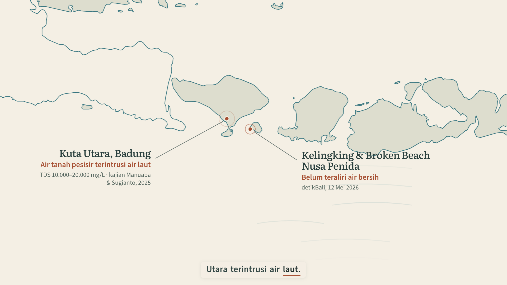
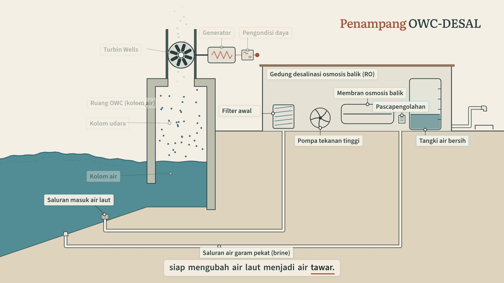
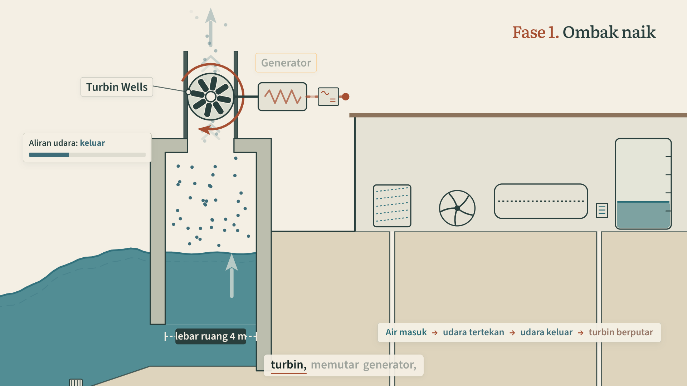
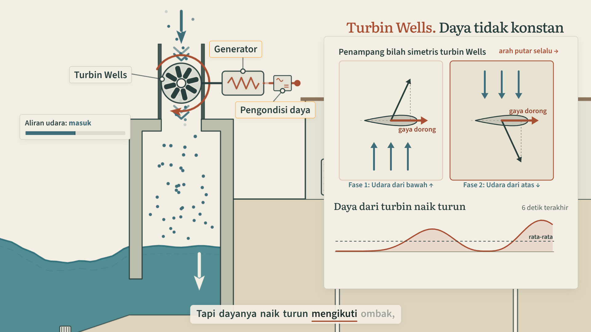
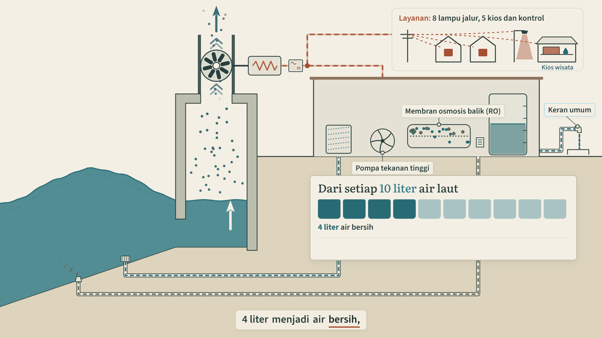
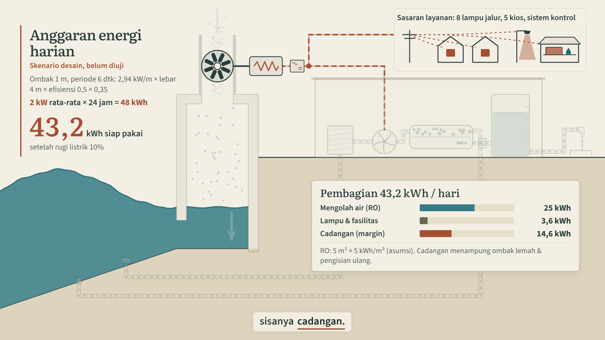
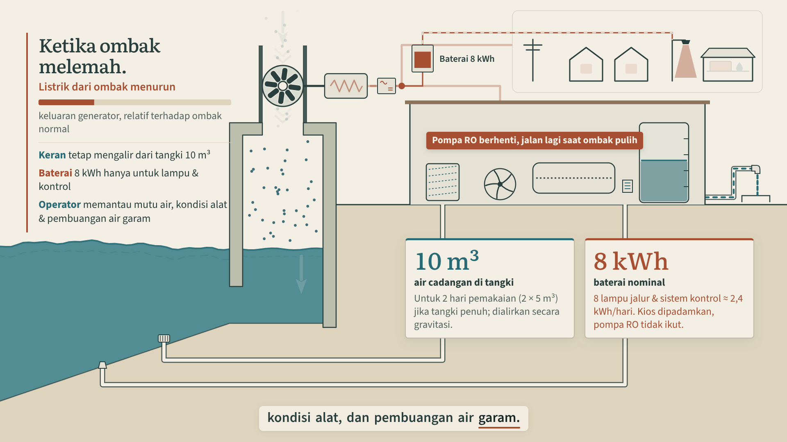
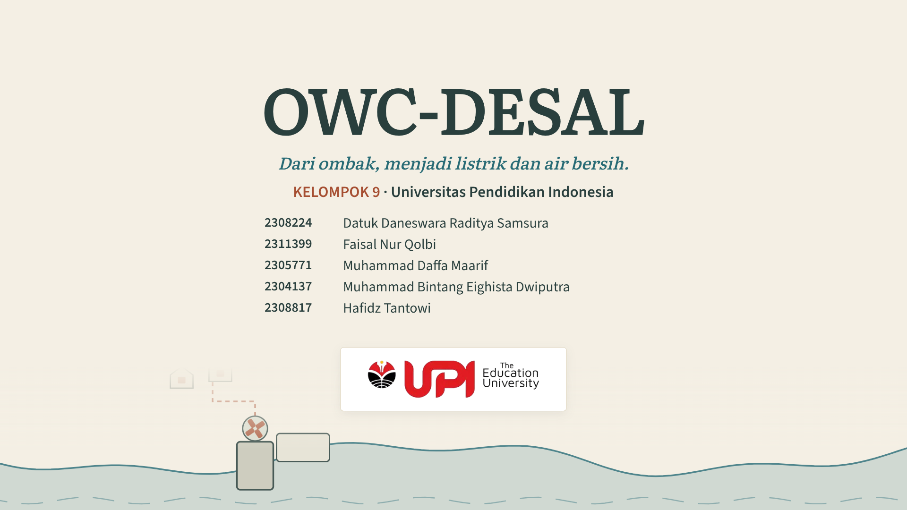

01: Masalah, potensi, dan sasaran pemanfaatan
0 to 42.5s · cuplikan 10.5s
Latar belakang pemanfaatan: masalah air dan energi, lalu sasaran spesifik (satu fasilitas wisata pantai, 200 pengunjung, toilet, 5 kios, 8 lampu jalur) yang butuh air bersih dan listrik juga di malam hari, dan alasan memilih ombak. Detail: peta menyelam ke Bali, dua penanda bersumber (Kelingking & Broken Beach belum teraliri air bersih; sumur Kuta Utara terintrusi air laut), lalu potensi energi laut 63 GW yang belum dimanfaatkan, dan pertanyaan "Bisakah ombak menghasilkan listrik, sekaligus air bersih?"

02: Sistem terbentuk bertahap
42.5 to 66s · cuplikan 65s
Pantai mulai sebagai tebing padat; chamber "digali" ke dalamnya, lalu turbin, generator, pengondisi daya, pipa dan unit RO terbentuk mengikuti narasi asli.

03: Kolom air naik, listrik dihasilkan
66 to 83s · cuplikan 79s
Push-in ke chamber. Air naik, udara keluar, rotor berputar; urutan Air masuk → udara tertekan → udara keluar → turbin berputar menyala tepat pada kata yang diucapkan.

04: Udara berbalik, rotor tetap searah
83 to 106.5s · cuplikan 101s
Fase surut, lalu inset bilah simetris: panah udara tiap panel muncul pada kata "bawah" dan "atas". Grafik daya kini berdenyut dua kali per ombak (∝ aliran udara³) dengan garis rata-rata.

05: RO dan dua keluaran air
106.5 to 139.5s · cuplikan 127s
Zoom ke membran saat disebut. Neraca air dibaca sebagai 10 kotak liter: 4 menjadi air bersih, 6 menjadi air garam pekat, lalu skala harian 12,5 → 5 + 7,5 m³.

06: Alokasi air dan anggaran energi
139.5 to 164s · cuplikan 162s
Siapa yang dilayani: 200 pengunjung, tiap baris alokasi air menyala saat disebut. Energi: rantai 2 kW × 24 jam = 48 kWh → 43,2 kWh siap pakai, lalu 25 / 3,6 / sisanya cadangan.

07: Ketika ombak melemah
164 to 188.2s · cuplikan 186s
Ombak melemah, pompa RO berhenti saat kata "dihentikan". Daftar konsekuensi bertambah (keran dari tangki, baterai hanya lampu & kontrol, operator memantau); kartu 10 m³ dan 8 kWh.

08: Konsep menuju pengujian
188.2 to 201.7s · cuplikan 199.5s
Iris menutup penampang ke satu unit pilot. Batas klaim diucapkan ("angka ini masih skenario desain"), tiga langkah uji, lalu kredit di atas laut yang tetap bergerak.